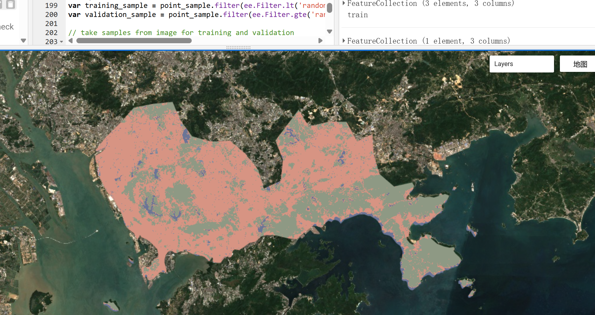

5 Classification Ⅰ
5.1 Summary
Classification methods include supervised classification and unsupervised classification, distinguished by whether a labeled training dataset is required. Supervised classification aims to assign samples to predefined categories, while unsupervised classification groups samples based on the similarity of their features, with the meaning of these clusters remaining unclear. This section primarily introduces several supervised classification methods.
5.1.1 Decision Tree
| Type | Important Metrics | Construction Process (CART Algorithm：Binary Splits at Each Node) |
|---|---|---|
| Classification Tree | Gini Impurity: quantify the mixing of categories in a node |
|
| Regression Tree |
|
|
If the final trained model has low bias, it may lead to overfitting (a high-variance model), requiring pruning of the decision tree.
5.1.2 Random Forest
RF leverages multiple decision trees simultaneously, randomly selecting a subset of features during both the overall feature selection for the trees and the feature selection for node splitting, to reduce correlation between trees. The final prediction result is based on the majority vote from different trees (for classification) or the average of predictions (for regression).
It should be noted that each tree has its own OOB (Out-of-Bag) samples, which differ from test data as they are never used for training. OOB samples are mainly used for parameter tuning or model evaluation.
Figure 5.1 shows the LCC of Shenzhen based on Sentinel-2, with features divided into 4 categories (vegetation, water, bare land, urban). Due to the coarse classification, the overall accuracy of the training set is as high as 99.96%, and that of the test set reaches 99.42%.

5.1.3 SVM
SVM is a linear binary classifier that maps data into a high-dimensional feature space to find the hyperplane that maximizes the margin for classification. Its main parameters include the C value and Gamma value: the C value controls the penalty for misclassification, while the Gamma value determines the influence range of each data point. The key focus of SVM is to find a balance between maximizing the margin and minimizing misclassification errors.
5.2 Application
There are numerous application areas for land cover classification using remote sensing imagery, These include, but are not limited to crop growth monitoring and yield prediction, urban land use planning, resource management, and environmental change monitoring.
In the agricultural domain, remote sensing products with red-edge bands are often preferred, as this spectral region is highly sensitive to changes in chlorophyll content，which directly reflects plant health and development. For example, Valero Medina and Alzate Atehortúa (2019) used RapidEye satellite imagery to distinguish the growth stages of cotton in San Pelayo, a traditional cotton-growing region in Colombia. They compared the performance of three classification algorithms—Maximum Likelihood, Random Forest, and Support Vector Machine (SVM)—and found that SVM performed best in terms of classification accuracy and preservation of geometric detail. Such techniques can be applied to monitor crop growth conditions and development stages, providing valuable support for agricultural management.
For environmental change monitoring, which often requires long-term time series data, Landsat imagery is widely used due to its free accessibility and broad temporal coverage. For instance, coastal wetlands are of high research interest due to their ecological functions such as climate regulation, windbreak and sand fixation, and provision of habitats. By using multi-temporal Landsat imagery and referring to internationally recognized land cover classification standards, researchers can classify coastal land cover types and identify the spatial distribution and dynamic changes of various features (e.g., urban expansion, coastal erosion). This helps assess the degree of degradation and provides a scientific basis for the formulation and implementation of ecological restoration policies (Lemenkova 2024).
5.3 Reflection
The history of land cover classification based on remote sensing data can be traced back to the early 1970s, following the launch of Landsat-1. Since then, classification methods have evolved rapidly—from traditional approaches such as Maximum Likelihood Classification and Minimum Distance Classification to the advanced machine learning and deep learning techniques used today.
At present, Random Forest (RF) and Support Vector Machine (SVM) have become two of the most widely adopted machine learning methods in remote sensing classification. Each has its own strengths and limitations and is suited to different research contexts. One reason for SVM’s strong performance in tasks like distinguishing the growth stages of cotton, as mentioned above, may be its ability to project input data into a high-dimensional feature space, making it particularly sensitive to subtle spectral differences. However, this advantage comes at a cost: SVM is highly sensitive to parameter tuning, and inappropriate parameter settings can negatively affect classification accuracy. Moreover, due to its reliance on high-dimensional matrix operations, SVM struggles with scalability and is less efficient when applied to large-scale land cover classification tasks.
In contrast, Random Forest, by employing an ensemble of decision trees and a majority-voting mechanism, exhibits strong robustness to noise and requires relatively little data preprocessing (Adugna, Xu, and Fan 2022). Nevertheless, this ensemble approach may also smooth over finer spectral variations, potentially overlooking subtle differences between classes.
In recent years, deep learning methods—such as Convolutional Neural Networks (CNNs)—have been widely applied in land cover classification. With the continued development of classification techniques, it is anticipated that more diverse and precise tools will become available, enabling better adaptation to the specific requirements of various research applications.